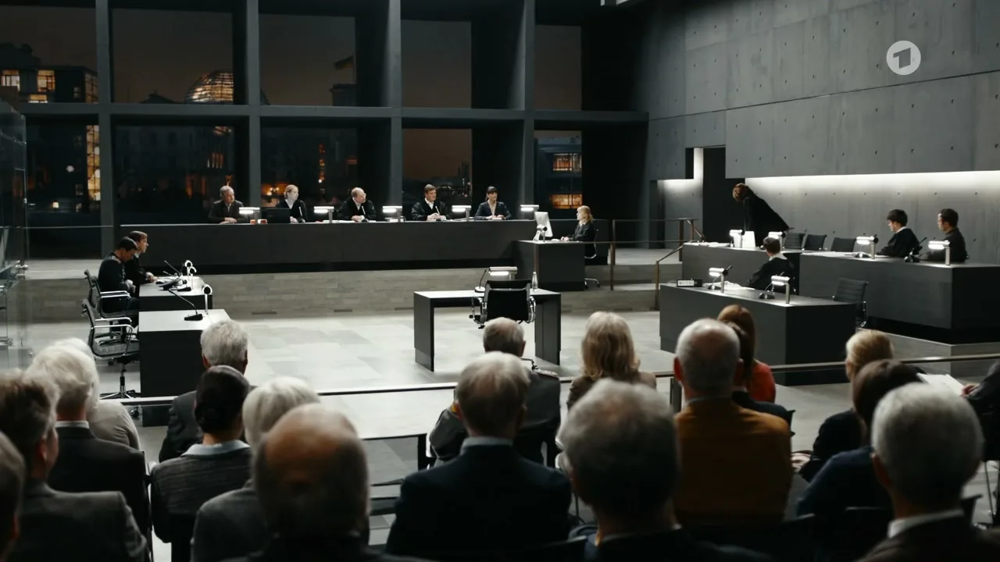

Das Gericht
seid ihr.
Sechs Perspektiven. Eine gemeinsame Verhandlung.
Verteilt die Rollen, prüft die Beweise und sprecht euer eigenes, begründetes Urteil.
Den Vorsitz übernehmen
Eröffne einen Raum und lade fünf Mitspieler*innen ein. Du führst durch die Verhandlung und erhältst eine Entscheidungshilfe.
Eine Rolle übernehmen
Für Lehrpersonen: Windows als zweite Bibliothek
Ein zweiter Lehrercomputer kann die lokale Beratung zusätzlich zum Mac oder als Ersatz übernehmen. Installation mit LM Studio, Node.js und Python; die beiden Unterrichts-PDFs und der private Verbindungsschlüssel werden vor Ort ergänzt.
Windows-Installationspaket herunterladen · Schritt-für-Schritt-Anleitung
So funktioniert die Verhandlung
Die Rolle des Vorsitzes gehört der Person, die den Raum eröffnet. Fünf weitere Personen wählen Koch, Biegler, Nelson, Lauterbach oder Meiser. Alle können die Akte lesen. Der Vorsitz kann allen oder einer Rolle das Wort erteilen; Einwände und organisatorische Nachrichten bleiben möglich. Eine Wortmeldung erscheint neben der Rolle.
Es gibt keinen automatischen Richter und keine vorgeschriebenen Dialoge. Ihr könnt den Textfall neu verhandeln oder vor Beginn eine ausdrücklich erfundene Fallvariante wählen. Die Richterhilfe prüft die Vollständigkeit der Begründung, sie fällt kein Urteil.
Beim Neuladen bleibt deine Rolle in diesem Browserfenster erhalten. Schliessst du das Fenster, ist deine Rolle für dich reserviert. Ist dein Zugang verloren, kann der Vorsitz eine offline befindliche Rolle freigeben. Der Vorsitz kann nicht neu vergeben werden; bei Verlust seines Zugangs beginnt ihr einen neuen Raum.
Der Fall Lars Koch
Fiktive Regierungsregel: Notstand als mögliche Rechtfertigung
Für diese Simulation ist ein übergesetzlicher Notstand als möglicher Rechtfertigungsgrund zugelassen. Kein automatischer Freispruch: Gefahr, Erforderlichkeit, Alternativen, damaliger Wissensstand und Gegenargumente müssen begründet werden. Die echte verfassungsrechtliche Menschenwürdegrenze wird durch eine Regierungsposition nicht aufgehoben.
Die gemeinsame Richterbibliothek hält die verbindliche Version der Spielregel und das Bewertungsraster bereit.